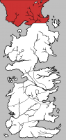
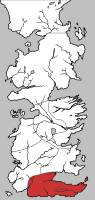
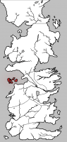
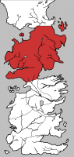
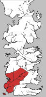
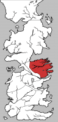
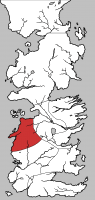

Plot, Setting, & Character Connections Between the Novels of "A Song of Ice and Fire" and HBO's "Game of Thrones"
The areas below list each of the episodes in HBO's Game of Thrones, each chapter in George R.R. Martin's novel series A Song of Ice and Fire and each of the major characters. Hovering over any of these three areas will highlight an individual episode, chapter, or character and show how they connect to the other two lists. Hovering over an episode will show the chapters that were used as source material and the characters that appeared in that episode. Hovering over a chapter will show the episode(s) which include events from that chapter and the characters that appeared. If you check the box in the lower-right, only the "point-of-view" character will be shown. Hovering over a character will display the episodes and chapters in which they appear (again, the POV checkbox will limit this feature).
Before anything can be seen, you'll need to move the spoiler controls out of the way. These are useful if you have not yet seen all the TV shows or read all the books. Simply slide them as far as you've read and you won't be able to see any spoilers.
Before anything can be seen, you'll need to move the spoiler controls out of the way. These are useful if you have not yet seen all the TV shows or read all the books. Simply slide them as far as you've read and you won't be able to see any spoilers.